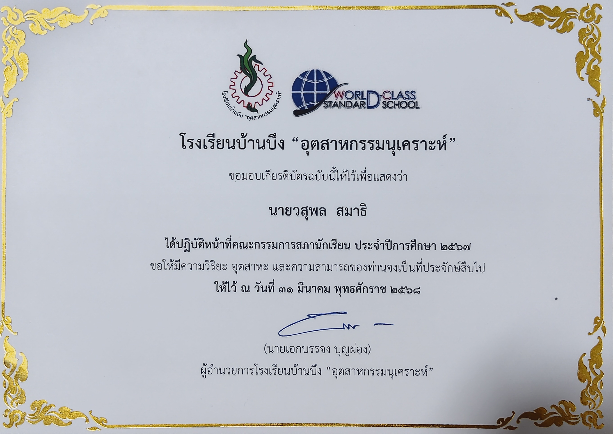
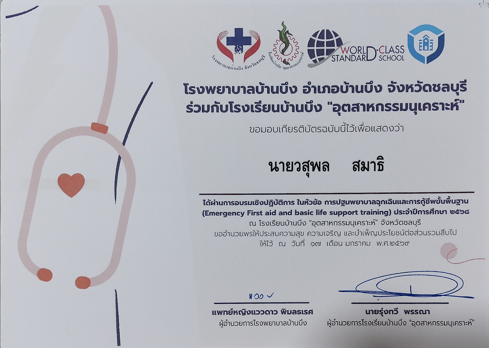
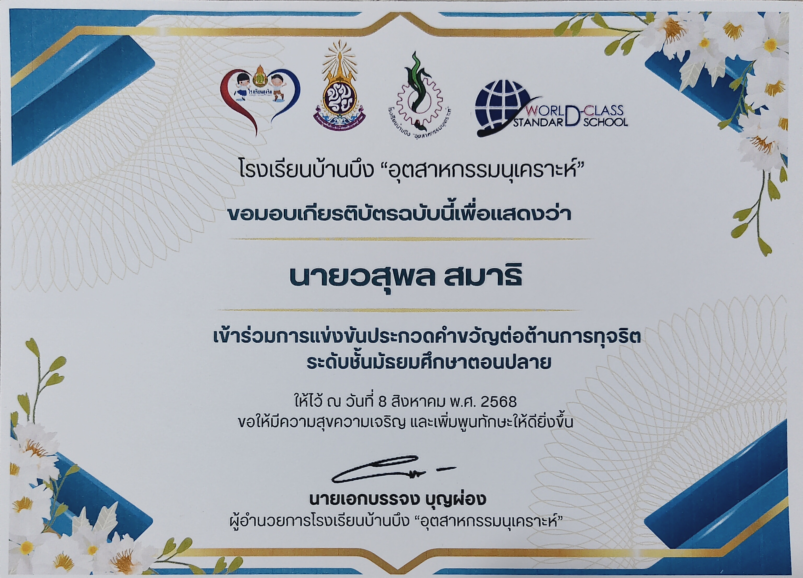
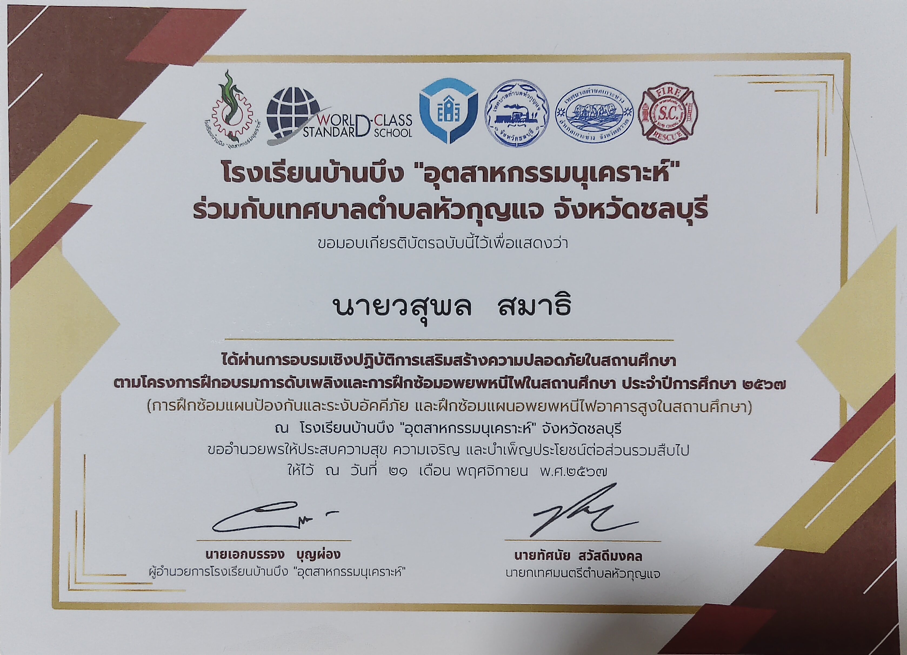
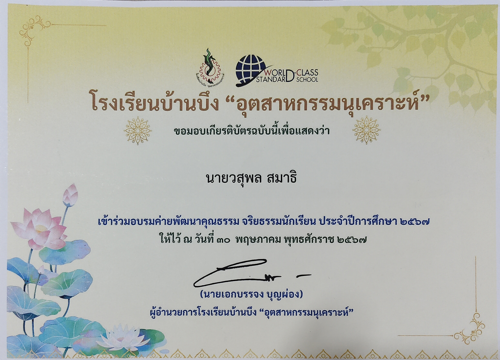

เกียรติบัตร & ผลงาน (Certificates)
ผลงานการทำงาน การแข่งขัน และการฝึกอบรมพัฒนาตนเอง

คณะกรรมการสภานักเรียน
ปฏิบัติหน้าที่คณะกรรมการสภานักเรียน ประจำปีการศึกษา 2567 ด้วยความวิริยะ อุตสาหะ และความสามารถ

การปฐมพยาบาลฉุกเฉิน & CPR ขั้นพื้นฐาน
ผ่านการอบรมเชิงปฏิบัติการ Emergency First Aid and Basic Life Support Training ประจำปีการศึกษา 2568

ประกวดคำขวัญต่อต้านการทุจริต
เข้าร่วมการแข่งขันประกวดคำขวัญต่อต้านการทุจริต ระดับชั้นมัธยมศึกษาตอนปลาย

ฝึกอบรมดับเพลิง & อพยพหนีไฟ
ผ่านการอบรมเชิงปฏิบัติการการฝึกซ้อมแผนป้องกันและระงับอัคคีภัยในอาคารสูง ประจำปีการศึกษา 2567

ค่ายพัฒนาคุณธรรม จริยธรรมนักเรียน
เข้าร่วมอบรมค่ายพัฒนาคุณธรรม จริยธรรมนักเรียน ประจำปีการศึกษา 2567